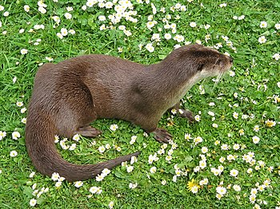
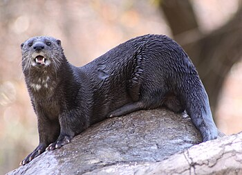
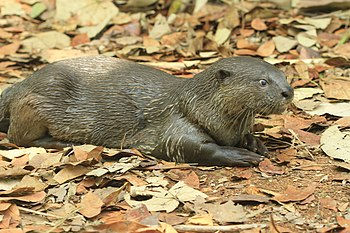
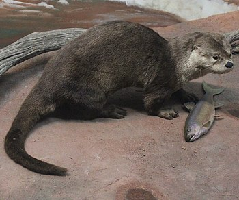
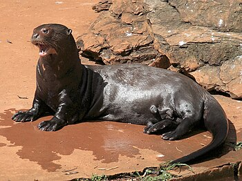
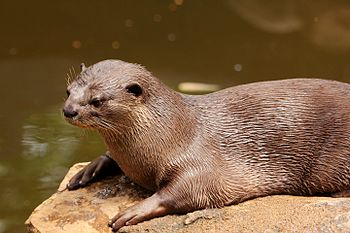
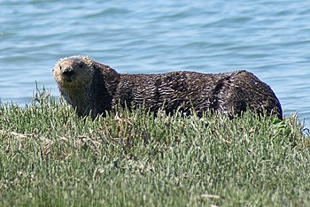

Otters have long, slim bodies and relatively short limbs. Their most striking anatomical features are the powerful webbed feet used to swim, and their seal-like abilities for holding breath underwater. Most have sharp claws on their feet and all except the sea otter have long, muscular tails. The 13 species range in adult size from 0.6 to 1.8 m (2.0 to 5.9 ft) in length and 1 to 45 kg (2.2 to 99.2 lb) in weight. The Asian small-clawed otter is the smallest otter species and the giant otter and sea otter are the largest. They have very soft, insulated underfur, which is protected by an outer layer of long guard hairs. This traps a layer of air which keeps them dry, warm, and somewhat buoyant under water. Several otter species live in cold waters and have high metabolic rates to help keep them warm. Eurasian otters must eat 15% of their body weight each day, and sea otters 20 to 25%, depending on the temperature. In water as warm as 10 °C (50 °F), an otter needs to catch 100 g (3.5 oz) of fish per hour to survive. Most species hunt for three to five hours each day and nursing mothers up to eight hours each day.
An otter's den is called a holt or couch. Male otters are called dogs or boars, females are called bitches or sows, and their offspring are called pups or cubs. The collective nouns for otters are bevy, family, lodge, romp (being descriptive of their often playful nature) or, when in water, raft. The feces of otters are typically identified by their distinctive aroma, the smell of which has been described as ranging from freshly mown hay to putrefied fish; these are known as spraints.
The gestation period in otters is about 60 to 86 days. The newborn pup is cared for by the bitch, dog, and older offspring. Female otters reach sexual maturity at approximately two years of age and males at approximately three years. The holt is built under tree roots or a rocky cairn, more common in Scotland. It is lined with moss and grass. After one month, the pup can leave the holt and after two months, it is able to swim. The pup lives with its family for approximately one year. Otters live up to 16 years; they are by nature playful, and frolic in the water with their pups. Its usual source of food is fish, and further downriver, eels, but it may sample frogs and birds.
For most otters, fish is the staple of their diet. This is often supplemented by frogs, crayfish and crabs.[12] Some otters are experts at opening shellfish, and others will feed on available small mammals or birds. Prey-dependence leaves otters very vulnerable to prey depletion. Sea otters are hunters of clams, sea urchins and other shelled creatures. They are notable for their ability to use stones to break open shellfish on their bellies. This skill must be learned by the young. Otters are active hunters, chasing prey in the water or searching the beds of rivers, lakes or the seas. Most species live beside water, but river otters usually enter it only to hunt or travel, otherwise spending much of their time on land to prevent their fur becoming waterlogged. Sea otters are considerably more aquatic and live in the ocean for most of their lives. Otters are playful animals and appear to engage in various behaviors for sheer enjoyment, such as making waterslides and sliding on them into the water. They may also find and play with small stones. Different species vary in their social structure, some being largely solitary, while others live in groups in a few species these groups may be fairly large.
| Image | Genus | Species |
|---|---|---|
|  | Lutra Brisson, 1762 |
|
|  | Hydrictis Pocock, 1921 |
|
|  | Lutrogale (Gray, 1865) |
|
|  | Lontra Gray, 1843 |
|
|  | Pteronura Gray, 1837 |
|
|  | Aonyx Lesson, 1827 |
|
|  | Enhydra Fleming, 1828 |
|
Otters have been hunted for their pelts from at least the 1700s, although it may have begun well before then. Early hunting methods included darts, arrows, nets and snares but later, traps were set on land and guns used. There has been a long history of otter pelts being worn around the world. In China it was standard for the royalty to wear robes made from them. People that were financially high in status also wore them. The tails of otters were often made into items for men to wear. These included hats and belts. Even some types of mittens for children have been made from the fur of otters.[25] Otters have also been hunted using dogs, especially the otterhound.[26] From 1958 to 1963, the 11 otter hunts in England and Wales killed 1,065 otters between them. In such hunts, the hunters notched their poles after every kill. The prized trophy that hunters would take from the otters was the baculum, which would be worn as a tie-pin.[27] Traffic (the wildlife trade monitoring network) reported that otters are at serious risk in Southeast Asia and have disappeared from parts of their former range. This decline in populations is due to hunting to supply the demand for skins.[28]
For many generations, fishermen in southern Bangladesh have bred smooth-coated otters and used them to chase fish into their nets. Once a widespread practice, passed down from father to son throughout many communities in Asia, this traditional use of domesticated wild animals is still in practice in the district of Narail, Bangladesh.[29][30]
A 2011 review by the IUCN/SSC Otter Specialist Group showed that otter attacks reported between 1875 and 2010 occurred most often in Florida, where human and otter populations have substantially increased since 2000, with the majority involving the North American otter. At least 42 instances of attack were found, including one resulting in death and another case of serious injury. Attacking otters had rabies in 36% of anecdotal reports.[31] 80% of otter bite victims do not seek medical treatment.[32] Animal welfare groups say that, unless threatened, otters rarely attack humans.[33] In November 2021, about 20 otters ambushed a British man in his 60s during an early morning walk in Singapore Botanic Gardens. Despite weighing over 200 pounds, he was trampled and bitten and could not stand up without help from a nearby rescuer. The man speculated that another runner might have stepped on one of the animals earlier, and wished that there could be more lighting installed at that location.[33]
Norse mythology tells of the dwarf Ótr habitually taking the form of an otter. The myth of "Otter's Ransom"[34] is the starting point of the Volsunga saga. In Irish mythology, the character Lí Ban was turned from a woman into a mermaid, half human and half salmon, and given three hundred years of life to roam the oceans. Her lapdog assumed the form of an otter and shared her prolonged lifetime and her extensive wanderings. In some Native American cultures, otters are considered totem animals.[35] The otter is held to be a clean animal belonging to Ahura Mazda in Zoroastrian belief, and taboo to kill.[36] In popular Korean mythology, it is told that people who see an otter (soodal) will attract 'rain clouds' for the rest of their lives.[37] In the Buddhist Jataka tales, The Otters and The Wolf, two otters agreed to let a wolf settle their dispute in dividing their caught fish but it was taken away by the cunning wolf.[38]